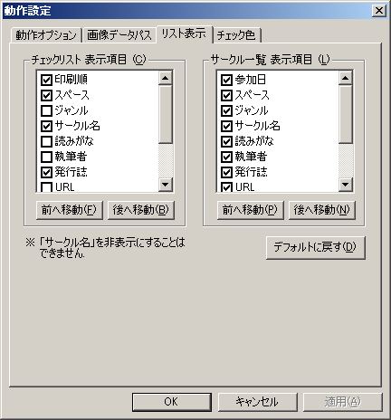

チェックリストウィンドウ、サークル一覧ウィンドウでの、リスト表示の表示項目と項目の位置を設定できます。
それぞれの項目にチェックを入れると、その項目の列が表示されます。
逆にチェックを外すと、その項目は非表示になります。
また、項目を選択して「前へ移動」「後へ移動」ボタンを押すことで、項目の表示列を変更できます。
一番上にある項目がリストでは左側に、一番下にある項目がリストでは一番右側に表示されます。
なお、「サークル名」に関しては非表示にすることはできません。
また、表示順の設定に関係なく、一番左側の列には「チェック色」が常に表示されます。